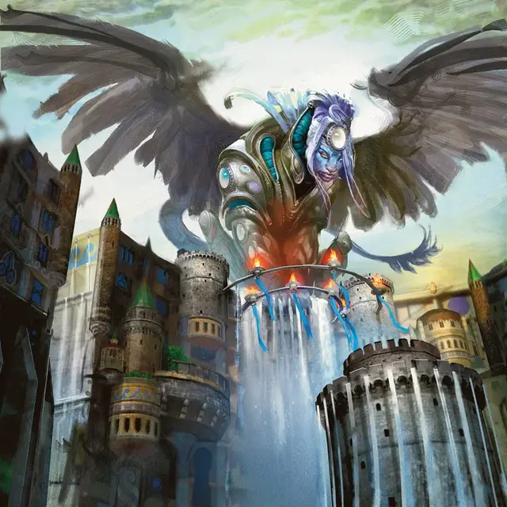

Исперия
Isperia
Громадный Монстр, законно-нейтральный, именной НИП

Класс Доспеха 17 (природный доспех)
Хиты 261 (18к20 + 72)
Скорость 40 футов, летая 60 футов
| мод | спас | ||
|---|---|---|---|
| СИЛ | 20 | +5 | +5 |
| ЛОВ | 14 | +2 | +9 |
| ТЕЛ | 18 | +4 | +11 |
| мод | спас | ||
|---|---|---|---|
| ИНТ | 23 | +6 | +13 |
| МДР | 26 | +8 | +15 |
| ХАР | 20 | +5 | +5 |
Навыки Восприятие +15, История +13, Магия +13, Проницательность +15
Иммунитет к урону психическая энергия; дробящий, колющий, рубящий от немагических атак
Иммунитет к состояниям испуг, очарование
Чувства истинное зрение 120 футов, пассивное Восприятие 25
Языки Общий, Язык Сфинксов
Опасность 21 (33000 опыта)
Бонус мастерства +7
Особенности
Врожденное колдовство. Базовой характеристикой заклинаний Исперии является Мудрость (Сл спасброска от заклинания 23). Исперия может накладывать заклинание, не требуя никаких материальных компонентов:
• 2/день: заточение [imprisonment].
Непостижимая. Исперия невосприимчива к любому эффекту, который мог бы почувствовать её эмоции или прочитать её мысли, а также к любому заклинанию школы Прорицания, который она не приняла добровольно. Проверки Мудрости (Проницательность), совершаемые для выяснения её намерений или искренности, совершаются с помехой.
Сопротивление магии. Исперия совершает с преимуществом спасброски от заклинаний и других магических эффектов.
Использование заклинаний. Исперия является заклинателем Азориусов 15-го уровня. Её базовой характеристикой заклинаний является Мудрость (Сл спасброска от заклинания 23, +14 к попаданию атаками заклинаниями). У нее подготовлены следующие заклинания жреца:
• Заговоры (неограниченно): указание [guidance], свет [light], сопротивление [resistance], священное пламя [sacred flame], чудотворство [thaumaturgy];
• 1 уровень (4 ячейки): приказ [command], обнаружение зла и добра [detect evil and good], опутывающий удар [ensnaring strike], убежище [sanctuary], щит веры [shield of faith];
• 2 уровень (3 ячейки): волшебный замок [arcane lock], предсказание [divination], умиротворение [calm emotions], удержание личности [hold person], тишина [silence], область истины [zone of truth];
• 3 уровень (3 ячейки): проклятие [bestow curse], подсматривание [clairvoyance], контрзаклинание [counterspell], рассеивание магии [dispel magic], языки [tongues];
• 4 уровень (3 ячейки): гадание [augury], поиск существа [locate creature];
• 5 уровень (2 ячейки): рассеивание зла и добра [dispel evil and good], наблюдение [scrying];
• 6 уровень (1 ячейка): слово возврата [word of recall];
• 7 уровень (1 ячейка): божественное слово [divine word];
• 8 уровень (1 ячейка): преграда магии [antimagic field].
ЧЕРТЫ Исперии.
Идеал:. «Закон задает направление для всех сфер жизни; это единственный компас, который мне нужен».
Привязанность:. «Я не могу стоять в стороне и смотреть, как беспорядок распространяется по городу. Без Азориуса Равника разрушится. В отсутствие порядка мы должны его установить».
Слабость:. «Если бы я не был нужна Равнике, я бы предпочла жить в одиночестве и созерцании».
Действия
Мультиатака. Исперия совершает две атаки Когтями. Вместо одной атаки Когтями она может наложить заклинание со временем накладывания "1 действие".
Коготь. . Рукопашная атака оружием: +12 к попаданию, досягаемость 5 фт., одна цель. Попадание: 21 (3к10 + 5) рубящего урона. Если цель — существо, оно должно преуспеть в спасброске Мудрости Сл 23, иначе получит 14 (4к6) урона психической энергией после каждой атаки, которую оно совершает против Исперии до начала её следующего хода.
Высший судебный орган. Исперия выбирает до трех существ, которых она может видеть в пределах 90 футов от себя. Каждая цель должна преуспеть в спасброске Интеллекта Сл 23, иначе Исперия выберет действие для этой цели: Атака, Наложение заклинания, Рывок, Отход, Уклонение, Помощь, Засада, Подготовка, Поиск или Использование предмета. Пораженная цель не может совершать это действие в течение 1 минуты. В конце каждого хода цель может прекратить действие эффекта на себе преуспев в спасброске Интеллекта Сл 23. Цель, преуспевшая в спасброске, становится невосприимчивой к к этой способности Исперии на 24 часа.
Легендарные действия
Исперия может совершить 3 легендарных действия, выбирая из представленных ниже вариантов. За один раз можно использовать только одно легендарное действие, и только в конце хода другого существа. Исперия восстанавливает использованные легендарные действия в начале своего хода.
Атака когтями. Исперия совершает одну атаку Когтями.
Накладывание заклинания (стоит 2 действия). Исперия накладывает заклинание 3-го уровня или ниже из своего списка подготовленных заклинаний, расходуя ячейку заклинания, как обычно.
Высший судебный орган. Исперия использует Высший судебный орган.
Описание
Исперия — действующий глава гильдии Сената Азориусов. Как сфинкс, она отстраненая и превыше всего ценит одиночество. Однако она была вынуждена отказаться от личной жизни, чтобы справиться с ростом преступности и хаосом в Равнике.
Исперия предана вере своей гильдии в то, что закон — это высший бастион против хаоса, и именно ее твердая рука ведет Азориусов в эти смутные времена. Как глава гильдии, Исперия выступает в роли верховного судьи, и в этой роли использует свои энциклопедическое знание запутанной правовой системы Равники.
Если столкновение связано с насилием, Исперия воздерживается от применения смертоносной силы, если это возможно, предпочитая пресечь правонарушение, чтобы судебная система сама смогла вершить свое правосудие.